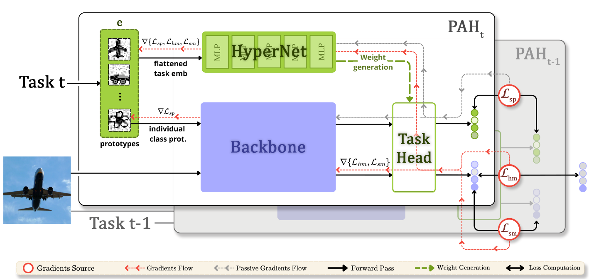
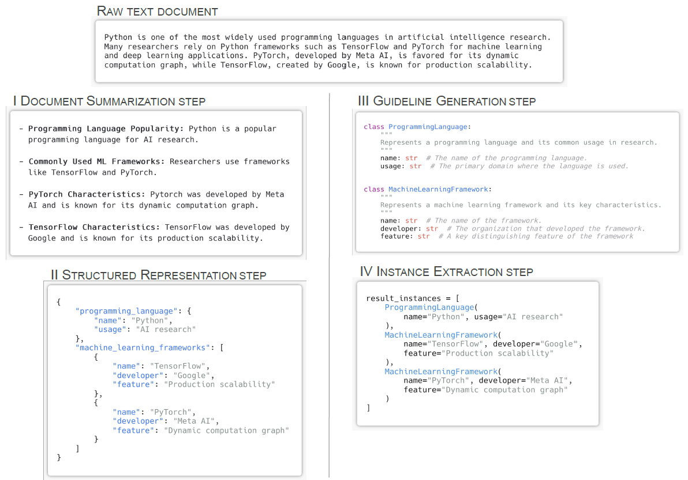
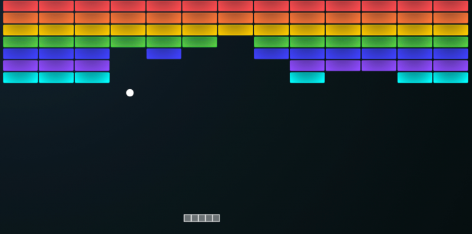

SpaceFlow: Locally Controllable 3D Generation
Preprint · 2026
Training-free 3D generation with local geometric control and part-specific text or image appearance conditioning.
My work focuses on the intersection of deep learning and computer vision.
Preprint · 2026
Training-free 3D generation with local geometric control and part-specific text or image appearance conditioning.


ACL 2025 (Findings)
Synthetic data generation strategies for information extraction tasks.

KDD 2024
Evaluating DQN stability across diverse Atari benchmarks.